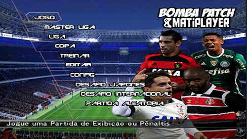

Bomba pacth

Bomba Patch é uma série de modificações (mods) da série de jogos eletrônicos de futebol Pro Evolution
Soccer,
criada pelo brasileiro Allan Jefferson. Originou-se em 2007 a partir de um campeonato do sexto
título da
série,
organizado pelo mesmo em sua locadora. Para o campeonato, ele decidiu trocar os times de futebol
originais
por
times brasileiros. Eventualmente, o mod, que teve seu nome inspirado em bombas de chocolate, passou
a ficar
conhecido nacionalmente.
Allan parou de trabalhar no Bomba Patch em 2008, quando se mudou para estudar em uma universidade.
No
entanto,
ao perceber, mais tarde, a grande popularidade do jogo, somado a um patrocínio de uma loja, ele
voltou a
atualizá-lo frequentemente. Desde então, diversas versões do mod foram criadas, e Allan criou redes
sociais
para
o mesmo. Várias publicações reconhecem Bomba Patch como um dos principais e mais populares mods de
esporte
do
Brasil